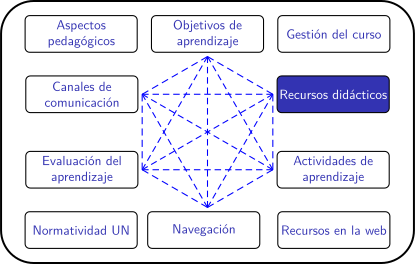
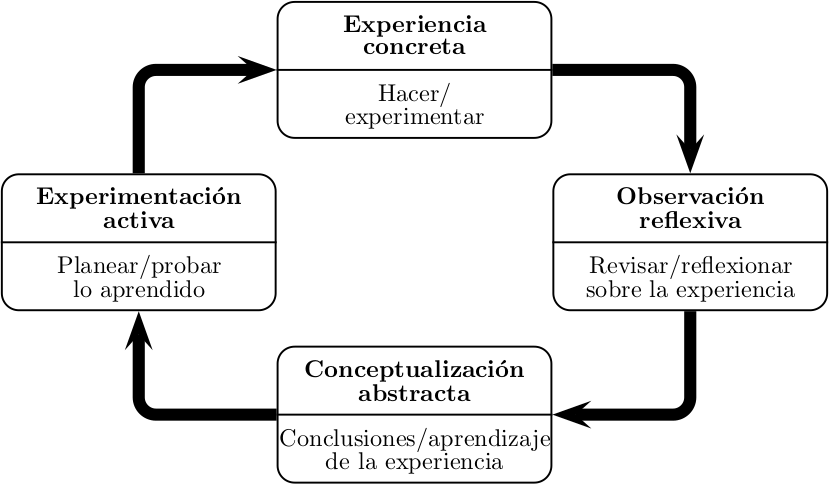

Planificación de clases remotas en la UNAL (periodo 2020-02)
Laboratorios virtuales
Tipos de laboratorios virtuales
Potencial pedagógico
La siguiente tabla (elaborada por Davies en 2008) compara el nivel de autonomía que tiene un estudiante en un laboratorio, según el tipo de actividad que allí se desarrolle.
| Nivel de autonomía | Tipo de actividad | Condiciones | |||
| Objetivos | Material | Método | Respuesta | ||
| 0 | Demostración | Dado | Dado | Dado | Dado |
| 1 | Ejercicio | Dado | Dado | Dado | Abierto |
| 2 | Investigación estructurada | Dado | Parcialmente dado | Parcialmente dado | Abierto |
| 3 | Investigación abierta | Dado | Abierto | Abierto | Abierto |
| 4 | Proyecto | Abierto | Abierto | Abierto | Abierto |
Para analizar el papel de los laboratorios (y en general de la práctica) en el aprendizaje, puede emplearse el modelo de Aprendizaje por Experiencia (Experiential Learning) propuesto por Kolb. De acuerdo con ese modelo, el aprendizaje es un proceso iterativo (o en espiral) que tiene las cuatro etapas que se muestran en la siguiente figura:

Podemos argumentar que una demostración tiene un potencial pedagógico limitado porque el estudiante no participa de todas las etapas del ciclo de Kolb: No planea, no experimenta, quizás reflexiona sobre la experiencia y desarrolla sus conclusiones.
En el otro extremo de la tabla, en el desarrollo de proyectos el estudiante debe involucrarse completamente en las cuatro fases, y probablemente recorrerlas en más de una ocasión.
Con estas dos herramientas (la tabla que propone Davies y el ciclo que propone Kolb), podemos intentar abordar la pregunta ¿cuál es el potencial pedagógico de los laboratorios virtuales? O de otra forma: ¿qué objetivos de aprendizaje pueden promoverse con los laboratorios virtuales?
Para construir una respuesta, primero debemos identificar qué tipo de actividades se pueden desarrollar en un laboratorio virtual específico, y qué tanto puede involucrase un estudiante en ellas. No es lo mismo un vídeo demostrativo que un ambiente virtual de experimentación.
En todo caso, a la hora de definir objetivos de aprendizaje asociados con laboratorios (virtuales o no) conviene tener presente la recomendación de Davies, según las cuales es preferible concentrarse en los objetivos de alto nivel:
- Desarrollo de habilidades experimentales, de diseño, de análisis y solución de problemas.
- Desarrollo de habilidades de análisis y registro de datos.
- Familiarizar a los estudiantes con equipo, técnicas y materiales.
- Desarrollo de habilidades prácticas.
- Desarrollo de habilidades interpersonales y de comunicación.
- Desarrollo de juicios técnicos y práctica profesional.
- Integración de teoría y práctica.
Clara Davies. Learning and teaching in laboratories. Technical report, Engineering Subject Centre. The Higher Education Academy, 2008.
David A. Kolb. Experiential Learning - experience as a source of learning and development. Prentice Hall, 1984.
¿Cómo son los laboratorios virtuales de la Universidad Nacional?
UNVirtualLab - laboratorio orientado a simulación de resultados:
La DNIA puede construir para usted un laboratorio virtual con enfoque en resultados y alojarlo en la plataforma UNVirtualLab. A manera de ejemplo, presentamos aquí un laboratorio sobre circuitos eléctricos RC. Usted debe contar con el modelo matemático subyacente y redactar la explicación de dicho modelo. En general, el tipo de modelos que allí se pueden construir en poco tiempo son los que corresponden a ecuaciones diferenciales y algebraicas. Tenga presente que la interfaz con el usuario no es personalizable, es decir, todos los laboratorios tienen una apariencia semejante a la del ejemplo.
Cloudlabs - laboratorio orientado a simulación de ambiente:
Durante el periodo 2020-01 se efectuó una prueba piloto del uso de Cloudlabs en unas pocas asignaturas de Química e Ingeniería en la sede Bogotá. En el siguiente video, la profesora Sandra Téllez presenta el laboratorio de Redes Eléctricas que empleó en su asignatura de Conversión Electromagnética y explica qué le aportó al aprendizaje de los estudiantes.
Si usted está interesado en emplear laboratorios virtuales de este tipo, revise las conclusiones de nuestro piloto, y participe en el foro de discusión, en el que encontrará un formulario de preinscripción para realizar la solicitud ante la DNIA.
Otros laboratorios "a la medida":
La DNIA ha desarrollado laboratorios virtuales a la medida de las necesidades de profesores, a través de convocatorias en años anteriores. Puede consultar el catálogo.
Solicitado por el profesor Julio César García de la sede Manizales.
Escriba un correo a innovaacadnal@unal.edu.coo
A cargo de la profesora Sandra Téllez y el profesor Sergio Rivera
¿Dónde puedo aprender más?
- Clara Davies. Learning and teaching in laboratories. Technical report, Engineering Subject Centre. The Higher Education Academy, 2008.
- Oscar G. Duarte V. UNVirtualLab: un laboratorio virtual basado en OpenModelica. Universidad Nacional de Colombia, 2019
- Mahmoud Abdulwahed and Zoltan K Nagy. Applying kolb’s experiential learning cycle for laboratory education. Journal of Engineering Education, 98:283–294, 2009.
Reflexión
- ¿Qué aprendizajes no son posibles en el escenario virtual y remoto? ¿Por qué? Participe en el foro.
Obra publicada con Licencia Creative Commons Reconocimiento Compartir igual 4.0